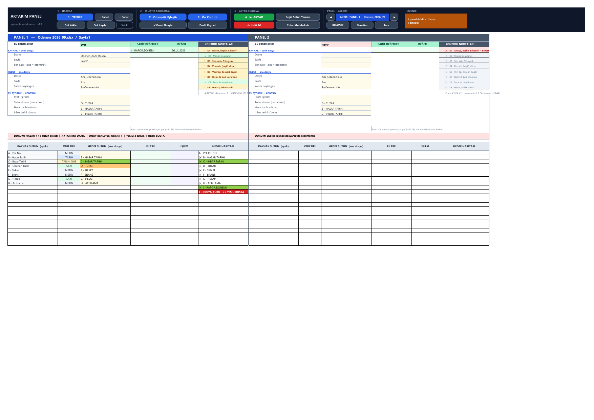
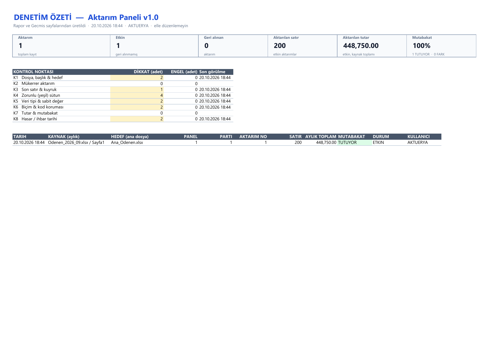

İndir
Güvenlik uyarısı mı alıyorsunuz? Kurum ağınız veya e-postanız makrolu dosyaları
(.xlsm) engelliyorsa 2 ve 3 numaralı paketleri ayrı ayrı indirip
kendi bilgisayarınızda birleştirin. Aşağıdaki adımlar 5 dakika sürer.
Hepsi bir arada
Çalışma kitabı ve makrolar birlikte. Açın, İçeriği Etkinleştir'e basın, kullanmaya başlayın.
⬇ .xlsm indirYalnızca Excel dosyası
Panel, Kılavuz ve kayıt sayfaları hazır, içinde hiç kod yok. Makro filtrelerine takılmaz.
⬇ .xlsx indirVBA modülleri
10 modül, 1 sınıf ve sayfa kodları, düz metin hâlinde. İçe aktarmadan önce okuyabilirsiniz. Kurulum notu (KURULUM.txt) zipin içinde.
⬇ .zip indirTüm sürümler: GitHub Releases · Kaynak kod: github.com/furkzel/pnL

v1.0 ile gelenler
1 → 2 → 3 → 4 iş akışı
Şerit numaralı çalışır: 1 Yenile, 2 Otomatik Eşleştir, 3 Ön Kontrol, 4 Aktar. Hangi adımda olduğunuz hep görünür.
Canlı K1–K8 karnesi
Her panelde sekiz aktüerya kontrol noktası (ASOP 23 ile uyumlu) ✓ / ! / ✕ olarak anlık görünür. Bulgular Rapor'a eksiksiz yazılır.
Denetim sayfası
Yönetici özeti: aktarım sayısı, geri alınanlar, aktarılan satır ve tutar, mutabakat oranı, K1–K8 istatistiği, son 15 aktarım.
HAZIRLIK göstergesi
Şeritte tek bakışta kaç panelin hazır, kaçının dikkatli, kaçının engelli olduğu. Tıklayınca panel panel döküm.
Çift tıklama kısayolları
DAHİL aç/kapat, önerilen eşleşmeyi onayla, İŞLEM seç, harita sütunundan tek hamlede sabit değer satırı aç.
Biçim ve baştaki sıfır koruması
0004821 4821'e, 16 haneli numara 1,23E+18'e, =... metni formüle dönüşmez; olduğu gibi (metin) yazılır.
4'lü tutar mutabakatı
Kaynak toplamı, yazılan toplam, hedefin önceki ve yeni toplamı birbirini tutmalı. FARK 0,00 değilse Rapor kırmızı uyarır.
İki aşamalı geri alma
Yazılan aralıkların parmak izi saklanır; sonradan elle değiştirilmiş hücreler geri almadan önce yakalanır, ezilen eski değerler yedekten döner.
8 aktüerya kontrol noktası
Her aktarım yazılmadan önce sekiz kontrol noktasından geçer. Sonuç her panelin KONTROL NOKTALARI kartında
(✓ geçti · ! dikkat · ✕ engel) ve Rapor'daki KONTROL NOKTASI sütununda görünür; yönetici özeti Denetim sayfasındadır.
| Nokta | Ne denetlenir |
|---|---|
| K1 Dosya, başlık & hedef | Dosya/sayfa erişimi, salt okunur kilit, başlık yeri ve adı, iki kaynağın aynı hedefe yazması, hedef aralık |
| K2 Mükerrer aktarım | Aynı aylık dosya bu ana dosyada zaten etkin mi |
| K3 Son satır & kuyruk | Alttaki genel toplam / not satırları, içerik önizlemesiyle |
| K4 Zorunlu (yeşil) sütun | Eşleşmeyen yeşil sütun ve yeşil sütunda boş hücre |
| K5 Veri tipi & sabit değer | Kaynak/hedef tip çatışması, sabit değerin hedef tipiyle uyumu |
| K6 Biçim & kod koruması | Baştaki sıfır, 16+ haneli numara, formül gibi metin, ##### tarih taşması |
| K7 Tutar & mutabakat | Sayı olmayan / boş / eksi tutar ve 4'lü mutabakat (FARK = 0,00) |
| K8 Hasar & ihbar tarihi | İhbar < hasar, boş, bozuk ve metin tarih |

Makrosuz dosya + makrolar: birleştirme
AktarimPaneli_v1.0_makrosuz.xlsxdosyasını açın. Dosya › Farklı Kaydet › Excel Makro Etkin Çalışma Kitabı (*.xlsm).- Alt+F11 ile VBA düzenleyicisini açın. File › Import File… ile zipteki
Sozluk.clsveM01_…–M09_…dosyalarını içe aktarın. - Sol panelde (Panel) satırına çift tıklayın,
Panel_sayfa_kodu.txtiçeriğini yapıştırın. - ThisWorkbook (Türkçe Excel'de BuÇalışmaKitabı) için
ThisWorkbook_kodu.txtiçeriğini yapıştırın. - Debug › Compile VBAProject çalıştırın; hata çıkmamalı. Kaydedin, kapatıp yeniden açın.
“Microsoft bu dosyadaki makroları engelledi” uyarısı
İnternetten indirilen dosyalar Windows tarafından işaretlenir (Mark of the Web) ve Office makrolarını kapatır.
- Dosyaya sağ tıklayın › Özellikler › altta Engellemeyi kaldır kutusunu işaretleyin › Tamam.
- Ya da dosyayı BT'nizin tanımladığı bir Güvenilir Konum'a kopyalayın.
- Kurum politikası buna da izin vermiyorsa 2 + 3 numaralı paketleri kullanın ve kodu kendiniz içe aktarın.
Dosyaları doğrulayın (SHA-256)
İndirdiğiniz dosyanın değiştirilmediğini PowerShell ile kontrol edin; çıkan değer aşağıdakiyle aynı olmalı:
Get-FileHash .\AktarimPaneli_v1.0.xlsm -Algorithm SHA256| Dosya | SHA-256 | |
|---|---|---|
| AktarimPaneli_v1.0.xlsm | 5a0fa475ec83f2123686bfff4573f17fd2575e3c696cc38f6c41fe7198542795 | |
| AktarimPaneli_v1.0_makrosuz.xlsx | b28d08a0159c86f3c2d846a71858d5f6299854030ac08c079ea477966878cf2b | |
| AktarimPaneli_v1.0_makrolar.zip | 4ba04a9a35cf1ecf65071b9a6a8d907b1d3eebee9df5e5f0d66ed764ccdb69fd |
Makrolar ne yapar, ne yapmaz?
Yapar
- Yalnızca sizin açtığınız Excel dosyalarını okur; ana dosyaya yalnızca onay verdiğiniz aktarımı yazar.
- Yazdığı her şeyi Gecmis ve Rapor sayfalarına kaydeder; Geri Al ile geri alınır.
- Aktarımdan önce eksik sütun, tip uyuşmazlığı, boş zorunlu alan, bozuk tutar ve toplam satırı gibi sorunları denetler.
Yapmaz
- İnternete ya da başka bir sunucuya bağlanmaz, veri göndermez.
- Dosya silmez, Windows ayarlarını değiştirmez, ActiveX veya dış kütüphane kullanmaz.
- Kodun tamamı açık metindir: src/.